Home / Past papers / MLT End Term / this paper
IIT M FOUNDATION ET1 EXAM QPF1 S2 03 Sep - 03 Sep 2023
Elapsed 00:00
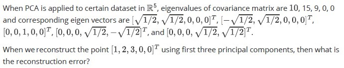
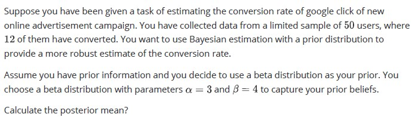
Hint: Assume that these are only two possible words (that is there are only two features)
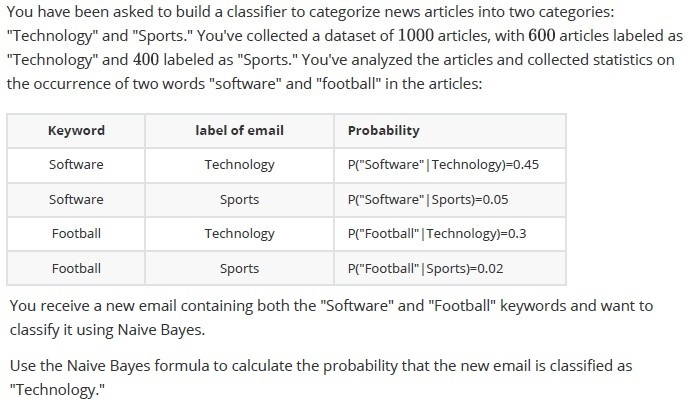
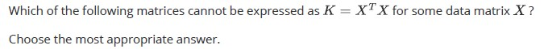
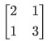
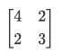
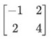
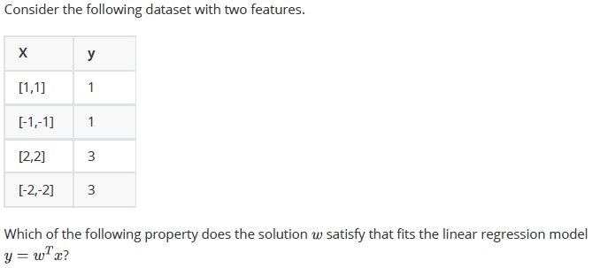
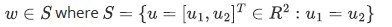
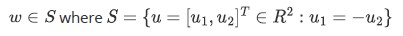
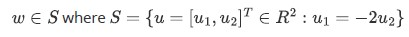
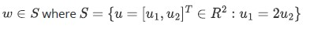
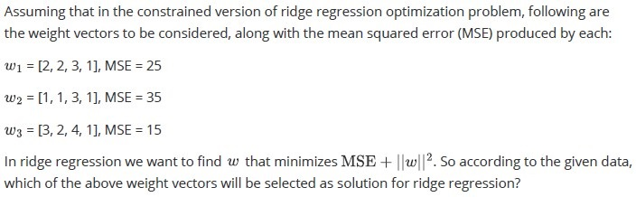
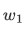
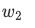
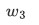
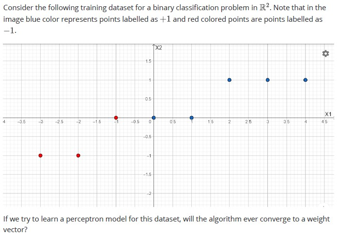
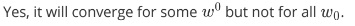
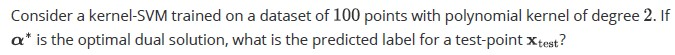
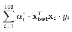
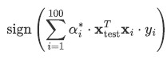
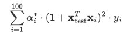
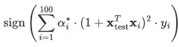
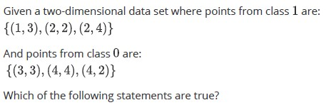
- The given data points from classes A and B can be linearly separated using aHard-margin SVM.
- Points (2, 2) from class 1 and (3, 3) from class 0 will be on the decisionboundary or support vectors.
- A Soft-margin SVM would be a more robust choice than a Hard-margin SVM forthis dataset as the dataset is not linearly separable.
- A perceptron model and a hard margin SVM will always give the same decisionboundary for this dataset.
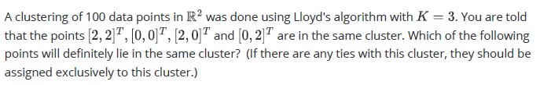
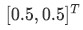
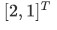
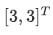
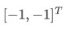
Which of the following statements is/are true regarding logistic regression and perceptron algorithm?


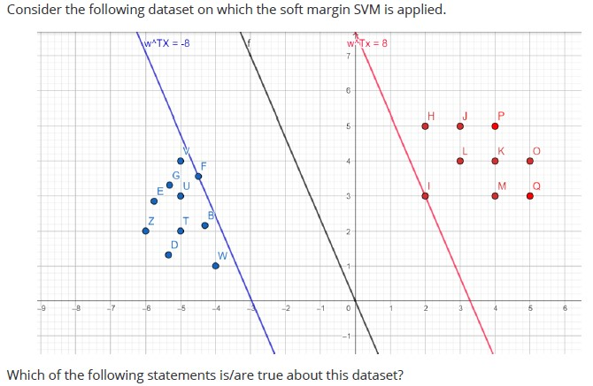
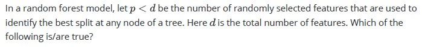
Comprehension passage - the questions below it refer to this
Based on the above data, answer the given subquestions.
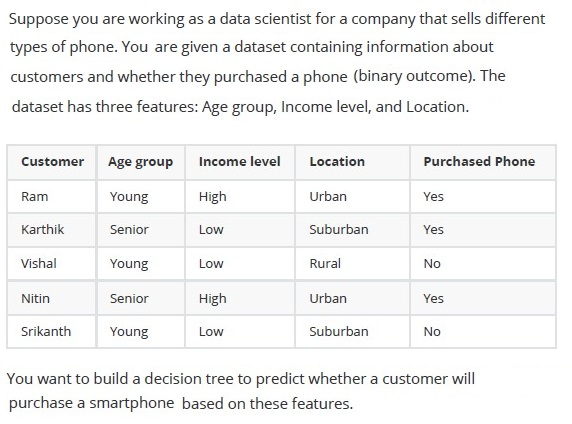
Calculate the information gain for the "Age Group" feature.
Calculate the information gain for the "Income level" feature.
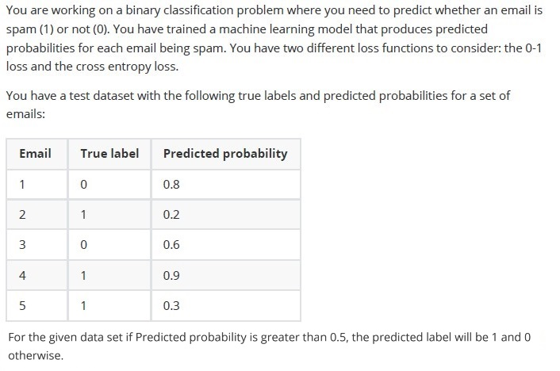
- The values of 0-1 loss function will be 3
- The values of cross entropy loss will be equals to 3.65
- The values of 0-1 loss equals 4.
- The values of cross entropy loss will be equals to 6.35
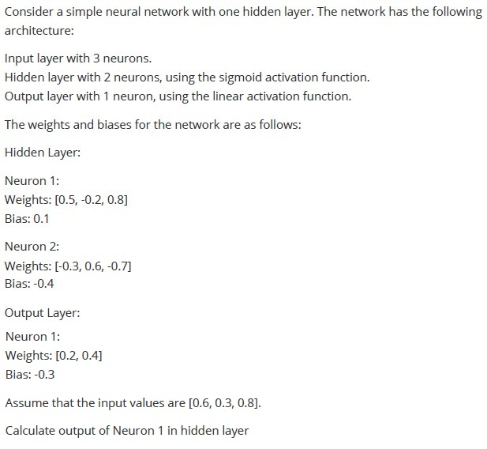
Answer key
- Q1 (SA, 6 marks): 0
- Q2 (SA, 6 marks): 0.20 to 0.40
- Q3 (SA, 6 marks): 0.98 to 1
- Q4 (MCQ, 6 marks): C
- Q5 (MCQ, 6 marks): A
- Q6 (MCQ, 6 marks): A
- Q7 (MCQ, 6 marks): B
- Q8 (MCQ, 6 marks): D
- Q9 (MCQ, 6 marks): A
- Q10 (MSQ, 6 marks): A, B
- Q11 (MSQ, 6 marks): A, B, D
- Q12 (MSQ, 6 marks): A, C, E
- Q13 (MSQ, 6 marks): B, C, D
- Q14 (SA, 4 marks): 0.20 to 0.60
- Q15 (SA, 4 marks): 0.20 to 0.60
- Q16 (MSQ, 7 marks): B, C
- Q17 (SA, 7 marks): 0.60 to 0.80